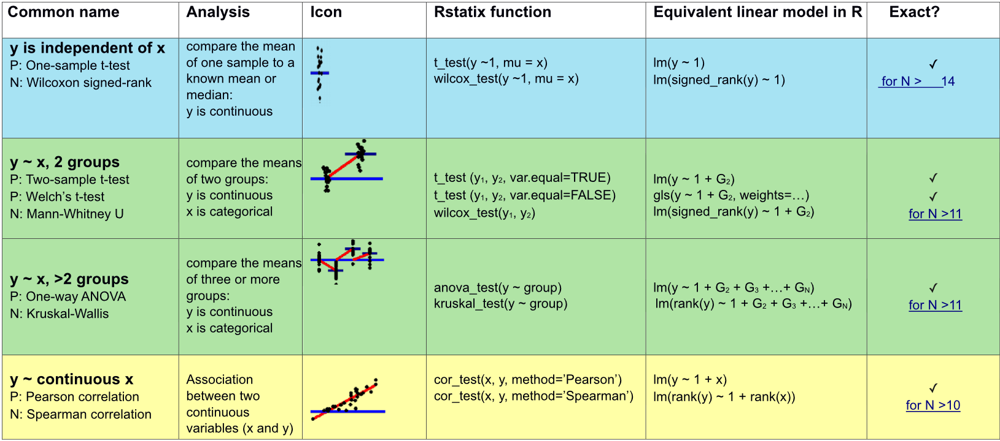
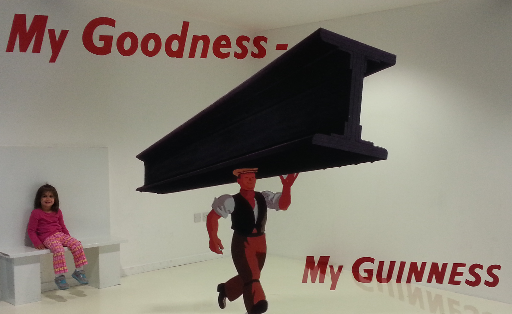

| Info | Parametric | Nonparametric |
|---|---|---|
| better descriptor | mean | median |
| # of samples (N) | many | few |
Stats Bootcamp - class 12
Hypothesis testing
Neel Mukherjee
RNA Bioscience Initiative | CU Anschutz
2025-09-09
Learning objectives
- Formulate and Execute null hypothesis testing
- Identify and Perform the proper statistical test for data type/comparison
- Calculate and Interpret p-values
Hypothesis testing definitions
Hypothesis testing is a statistical analysis that uses sample data to assess two mutually exclusive theories about the properties of a population. Statisticians call these theories the null hypothesis and the alternative hypothesis. A hypothesis test assesses your sample statistic and factors in an estimate of the sample error to determine which hypothesis the data support.
When you can reject the null hypothesis, the results are statistically significant, and your data support the theory that an effect exists at the population level.
A legal analogy: Guilty or not guilty?
The statistical concept of ‘significant’ vs. ‘not significant’ can be understood by comparing to the legal concept of ‘guilty’ vs. ‘not guilty’.
In the American legal system (and much of the world) a criminal defendant is presumed innocent until proven guilty. If the evidence proves the defendant guilty beyond a reasonable doubt, the verdict is ‘guilty’. Otherwise the verdict is ‘not guilty’. In some countries, this verdict is ‘not proven’, which is a better description. A ‘not guilty’ verdict does not mean the judge or jury concluded that the defendant is innocent – it just means that the evidence was not strong enough to persuade the judge or jury that the defendant was guilty.
In statistical hypothesis testing, you start with the null hypothesis (usually that there is no difference between groups). If the evidence produces a small enough P value, you reject that null hypothesis, and conclude that the difference is real. If the P value is higher than your threshold (usually 0.05), you don’t reject the null hypothesis. This doesn’t mean the evidence convinced you that the treatment had no effect, only that the evidence was not persuasive enough to convince you that there is an effect.
Definitions
Effect — the difference between the population value and the null hypothesis value. The effect is also known as population effect or the difference. Typically, you do not know the size of the actual effect. However, you can use a hypothesis test to help you determine whether an effect exists and to estimate its size.
Null Hypothesis or \(\mathcal{H}_0\) — one of two mutually exclusive theories about the properties of the population in hypothesis testing. Typically, the null hypothesis states that there is no effect (i.e., the effect size equals zero).
Alternative Hypothesis or \(\mathcal{H}_1\) — the other theory about the properties of the population in hypothesis testing. Typically, the alternative hypothesis states that a population parameter does not equal the null hypothesis value. In other words, there is a non-zero effect. If your sample contains sufficient evidence, you can reject the null and favor the alternative hypothesis.
Definitions cont.
P-values — the probability of obtaining test results at least as extreme as the results actually observed, under the assumption that the null hypothesis is correct. Lower p-values represent stronger evidence against the null. P-values in conjunction with the significance level determines whether your data favor the null or alternative hypothesis.
p = 0.03
There is a 3% chance of observing a difference as large as you observed even if the two population means are identical (the null hypothesis is true).
or
Random sampling from identical populations would lead to a difference smaller than you observed in 97% of experiments, and larger than you observed in 3% of experiments.
NOT
There is a 97% chance that the difference you observed reflects a real difference between populations, and a 3% chance that the difference is due to chance.
Significance Level or \(a\) — an evidentiary standard set before the study. It is the probability that you say there is an effect when there is no effect (the probability of rejecting the null hypothesis given that it is true). Lower significance levels indicate that you require stronger evidence before you will reject the null.It is usually set at or below .05.

Variables definitions
Random variables
Response Variable ( y - aka dependent or outcome variable): this variable is predicted or its variation is explained by the explanatory variable. In an experiment, this is the outcome that is measured following manipulation of the explanatory variable.
Explanatory Variable ( x - aka independent or predictor variable): explains variations in the response variable. In an experiment, it is manipulated by the researcher.
Null hypothesis testing
- Examine and specify the variable(s)
- Declare null hypothesis \(\mathcal{H}_0\)
- Calculate test-statistic, exact p-value
calculating empirical p-value (alternative to 3):
Generate and visualize data reflecting null-distribution
Calculate the frequency of your observation vs all null distribution values
Parametric vs Nonparametric tests
Parametric tests are suitable for normally distributed data.
Nonparametric tests are suitable for any continuous data. Though these tests have their own sets of assumption, you can think of Nonparametric tests as the ranked versions of the corresponding parametric tests.
More on choosing Parametric vs Non-Parametric
Appropriate statistical test cheatsheet
Assumptions of many parametric tests
- The data are randomly sampled (independent).
- The distribution is approximately normal*.
shapiro_test()more info
- There is homogeneity of variance (i.e., the variability of the data in each group is similar).
levene_test()more info
*With many samples (>20) then lack of normality assumption is not a concern due to the central limit theorem. AND shapiro_test() is too sensitive with large number of observations.
Two changes
- We are going to use
ggpubrrather thanggplot2- Don’t tell Jay ;)
- It has great visualization for the stats on the plots.
- Different syntax!!
- must use double quotes around “variable names”
- Due to reviewer #3, we will pivot to a more “physiologically relevant” data set
biochemthat consists of mouse measurements.
[1] "subject_name" "biochem_albumin"
[3] "biochem_alp" "biochem_alt"
[5] "biochem_ast" "biochem_calcium"
[7] "biochem_chloride" "biochem_creatinine"
[9] "biochem_glucose" "biochem_hdl"
[11] "biochem_ldl" "biochem_phosphorous"
[13] "biochem_potassium" "biochem_sodium"
[15] "biochem_tot_cholesterol" "biochem_tot_protein"
[17] "biochem_triglycerides" "biochem_urea"
[19] "end_normal_bw" "date_study_day"
[21] "date_season" "date_month"
[23] "date_year" "family"
[25] "gender" "age"
[27] "cage_density" "litter" Prepare mouse biochem data
# we are reading the data directly from the internet
biochem <- read_tsv("http://mtweb.cs.ucl.ac.uk/HSMICE/PHENOTYPES/Biochemistry.txt", show_col_types = FALSE) |>
janitor::clean_names()
# simplify names a bit more
colnames(biochem) <- gsub(pattern = "biochem_", replacement = "", colnames(biochem))
# we are going to simplify this a bit and only keep some columns
keep <- colnames(biochem)[c(1, 6, 9, 14, 15, 24:28)]
biochem <- biochem[, keep]
# get weights for each individual mouse
# careful: did not come with column names
weight <- read_tsv("http://mtweb.cs.ucl.ac.uk/HSMICE/PHENOTYPES/weight", col_names = F, show_col_types = FALSE)
# add column names
colnames(weight) <- c("subject_name", "weight")
# add weight to biochem table and get rid of NAs
# rename gender to sex
b <- inner_join(biochem, weight, by = "subject_name") |>
na.omit() |>
rename(sex = gender)Compare mean of a variable to a known value
\(y\) is independent of \(x\)
\(y\) is continuous
\(x\) is constant
Parametric: One-sample t-test
t_test(y ~ 1, mu = x)
Nonparametric: Wilcoxon signed-rank
wilcox_test(y ~ 1, mu = x)
- Examine and specify the variable(s)
- Declare null hypothesis \(\mathcal{H}_0\)
- Calculate test-statistic, exact p-value
Think did the expression of my gene change…
1. Examine and specify the variable(s)
Let’s explore mouse \(weight\)
Warning: `geom_vline()`: Ignoring `mapping` because `xintercept` was
provided.Warning: `geom_vline()`: Ignoring `data` because `xintercept` was
provided.
Is it normally distributed?
Looks reasonable
2. Declare null hypothesis \(\mathcal{H}_0\)
Since this is a one-way test, we don’t need to worry if the groups have equal variance (only 1 group). But, we need a standard to compare against. I asked google, how much does a mouse weigh in grams?
Answer: 20-35 g, I’m going with \(27.5 g\) as our standard.
\(\mathcal{H}_0\) is that the mean of mouse \(weight\) can be explained by \(27.5\)
\(weight\) is the response variable
\(27.5\) is the explanatory variable
3. Calculate test-statistic, exact p-value
Nonparametric test:
| .y. | group1 | group2 | n | statistic | p |
|---|---|---|---|---|---|
| weight | 1 | null model | 1782 | 2084 | 1.62e-290 |
Parametric test:
P values are well below 0.05
\(\mathcal{H}_0\) is that the mean of mouse \(weight\) can be explained by \(27.5\) is NOT WELL SUPPORTED
So \(27.5 g\) not able to describe weight
Not surprising since our mean mouse weight is 20.2. Don’t believe everything you read on the internet.
Compare mean of two groups
\(y\) is independent of \(x\)
\(y\) is continuous
\(x\) is categorical with 2 groups (factor w/2 levels)
Parametric: Student’s t-test
t_test(y ~ x) more here
need to pay attention to: var.equal paired
Nonparametric: Wilcoxon signed-rank
wilcox_test(y ~ x) more here
need to pay attention to: paired
- Examine and specify the variable(s)
- Declare null hypothesis \(\mathcal{H}_0\)
- Calculate test-statistic, exact p-value
Tangent on Student’s t-test
The T-Distribution, also known as Student’s t-distribution, gets its name from William Sealy Gosset who first published it in English in 1908 in the scientific journal Biometrika using his pseudonym “Student” because his employer preferred staff to use pen names when publishing scientific papers instead of their real name, so he used the name “Student” to hide his identity.
Guinness Brewery in Dublin


1. Examine and specify the variable(s)
We will compare mouse \(weight\) by \(sex\).
\(weight\) is the response variable
\(sex\) is the explanatory variable
\(y\) ~ \(x\)
\(weight\) ~ \(sex\)
I want the response variable on the \(y\) axis and the explanatory variable on the \(x\) axis.
Violin plot
Is it normally distributed?
Equal variance?
Warning in leveneTest.default(y = y, group = group, ...):
group coerced to factor.| df1 | df2 | statistic | p |
|---|---|---|---|
| 1 | 1780 | 134.994 | 3.928697e-30 |
OK - so we can use t-test, but variance is not equal.
2. Declare null hypothesis \(\mathcal{H}_0\)
\(\mathcal{H}_0\) is that \(sex\) cannot explain \(weight\)
3. Calculate test-statistic, exact p-value
Nonparametric test:
| .y. | group1 | group2 | n1 | n2 | statistic | p |
|---|---|---|---|---|---|---|
| weight | F | M | 891 | 891 | 90192 | 1.64e-175 |
Parametric test:
P values are well below 0.05
\(\mathcal{H}_0\) is that \(sex\) cannot explain \(weight\) is NOT WELL SUPPORTED
\(sex\) can explain \(weight\)
Visualize the result
Visualize the result
Compare means of three or more groups
\(y\) is independent of \(x\)
\(y\) is continuous
\(x\) is 2 or more groups of categorical data
Parametric: ANOVA
anova_test(y ~ group) more info
Nonparametric: Kruskal-Wallis test
kruskal_test(y ~ group) more info
- Examine and specify the variable(s)
- Declare null hypothesis \(\mathcal{H}_0\)
- Calculate test-statistic, exact p-value
1. Examine and specify the variable(s)
We will compare mouse \(weight\) by \(family\).
\(weight\) is the response variable
\(family\) is the explanatory variable
\(y\) ~ \(x\)
\(weight\) ~ \(family\)
# i have pre-selected some families to compare
myfams <- c(
"B1.5:E1.4(4) B1.5:A1.4(5)",
"F1.3:A1.2(3) F1.3:E2.2(3)",
"A1.3:D1.2(3) A1.3:H1.2(3)",
"D5.4:G2.3(4) D5.4:C4.3(4)"
)
# only keep the familys in myfams
bfam <- b |>
filter(family %in% myfams) |>
droplevels()
# simplify family names and make factor
bfam$family <- gsub(pattern = "\\..*", replacement = "", x = bfam$family) |>
as.factor()
# make B1 the reference (most similar to overall mean)
bfam$family <- relevel(x = bfam$family, ref = "B1")Visualize the variable(s)
I want the response variable on the \(y\) axis and the explanatory variable on the \(x\) axis.
Boxplot
# A tibble: 4 × 6
family variable n mean median sd
<fct> <fct> <dbl> <dbl> <dbl> <dbl>
1 B1 weight 11 18.1 17.6 2.40
2 A1 weight 12 14.4 14.2 1.57
3 D5 weight 20 23.9 24.4 3.20
4 F1 weight 11 17.4 17.2 2.51Is it normally distributed?
Equal variance?
OK - so we can use anova!
2. Declare null hypothesis \(\mathcal{H}_0\)
\(\mathcal{H}_0\) is that \(family\) cannot explain \(weight\)
3. Calculate test-statistic, exact p-value
Parametric test:
| Effect | DFn | DFd | F | p | p<.05 | ges |
|---|---|---|---|---|---|---|
| family | 3 | 50 | 37.514 | 7.62e-13 | * | 0.692 |
Nonparametric test:
P values are well below 0.05
\(\mathcal{H}_0\) is that \(family\) cannot explain \(weight\) is NOT WELL SUPPORTED
\(family\) can explain \(weight\)
Visualize the result
Visualize the result
Multiple pairwise comparisons
Quick aside
Notice that not all pairwise differences are significant, yet the ANOVA is significant.
Multiple pairwise comparisons
Warning: The following aesthetics were dropped during statistical
transformation: fill.
ℹ This can happen when ggplot fails to infer the correct
grouping structure in the data.
ℹ Did you forget to specify a `group` aesthetic or to
convert a numerical variable into a factor?Appropriate statistical test cheatsheet
References
StatQuest: P Values, clearly explained